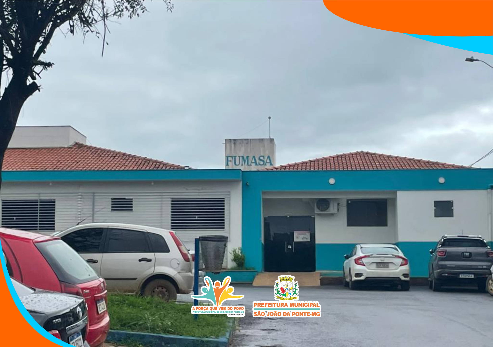
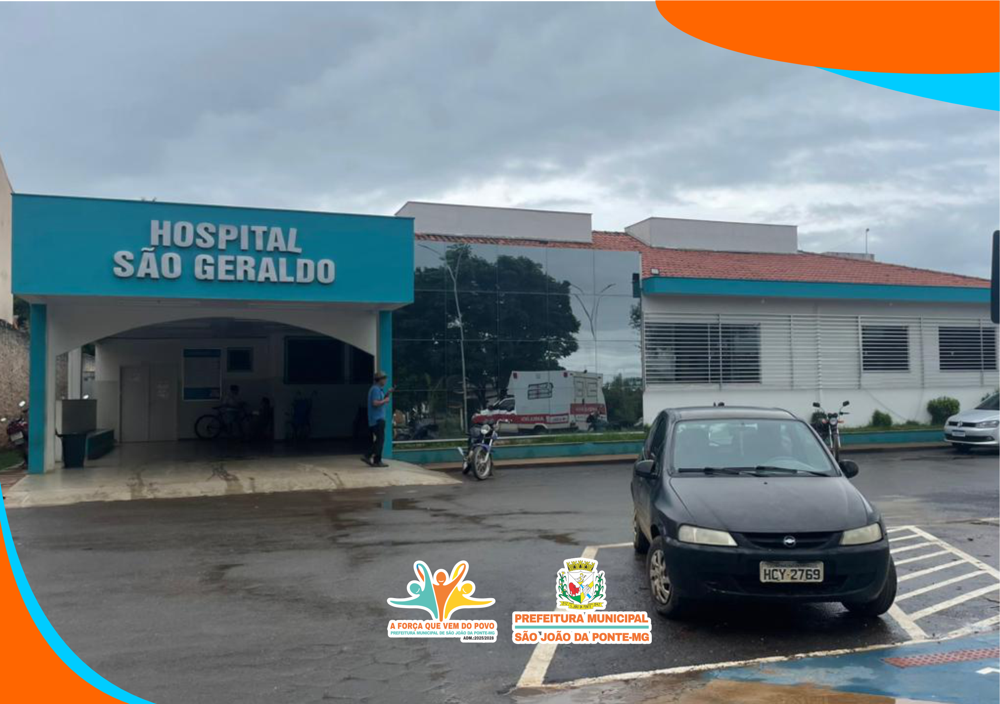

Prefeitura Municipal de
SÃO JOÃO DA PONTE - MG


Fundação Municipal de Assistência à Saúde (FUMASA)
QUEM SOMOS
A FUMASA é o pilar da saúde em São João da Ponte - MG. Com mais de 40 anos de história, nossa missão vai além da assistência médica; somos uma entidade dedicada à defesa dos direitos sociais e à garantia de um atendimento digno e humanizado para cada cidadão.



A Fundação Municipal de Assistência à Saúde (FUMASA) é uma entidade ativa desde 1982, atuando principalmente em atividades de associações de defesa de direitos sociais e na gestão do Hospital São Geraldo. Ela desempenha um papel fundamental no atendimento à saúde local.
Nossos Pilares de Atuação
Gestão do Hospital São Geraldo
Administramos o coração da saúde local, garantindo estrutura e atendimento hospitalar de qualidade.
Defesa de Direitos Sociais
Atuamos ativamente como uma associação que protege e promove o bem-estar social da comunidade.
Assistência Municipal
Braço forte da prefeitura na execução de políticas públicas de saúde.
Canais de Atendimento
Endereço:
Rua Rufino Cardoso, 381 - Vale do Sol, São João da Ponte - MG, 39430-000
Telefone:
(38) 3234-1100
Horário de Atendimento:
Plantão 24 Horas